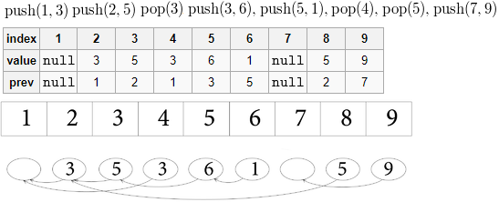

Персистентная структура - это такая структура данных, что при всяком их изменении остается доступ ко всем предыдущим версиям этой структуры.
Персистентный стек: https://habrahabr.ru/post/113585/

Персистентное декартово дерево по неявному ключу: https://habrahabr.ru/post/240519/
Персистивная очередь: https://habrahabr.ru/post/241231/